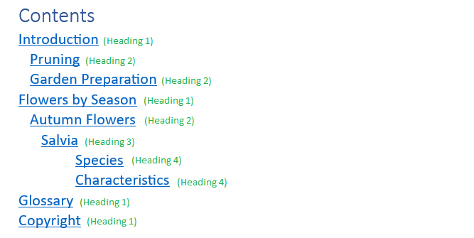

Converting the Word Document
For converting the Word document you have to install the Batch Documents Converter add-on in Oxygen. For this, you can follow the installation procedure from the documentation.
Configuring Word styles mapping
The Word to DITA conversion has two main steps: Word to HTML to DITA. The converter allows customising the first step by setting a mapping between Word styles and HTML elements. It already contains a default mapping configuration and because of this, it knows to handle the default styles and the custom styles that are based on the default styles.
Here you have more information about the Word Styles Mapping option: Conversions from Word
This is an example of styles configuration: How can I fix unrecognized style warnings?
Configuring the Maximum Heading Level for Creating Topics
The converter has an option named "Maximum Heading Level for Creating Topics"
in the Oxygen preferences page that allows setting a maximum heading level to
process as a DITA topic. The headings with a higher nesting level will be converted
to <section> elements.
This option can correspond with the value of the Show levels option that you configure in MS Word for generating a table of contents.

if you keep the default 5 value for the Maximum Heading Level for Creating Topics option, all Word sections will be converted to DITA topics. If you set the option to 3, the "Species" and "Characteristics" Word sections will be converted to DITA sections inside the "Salvia" DITA topic.
Converting the document
You can invoke the Word to DITA action from the following places for converting the Word documents:
- Batch Documents Converter from the Tools menu.
- Batch Documents Converter in the contextual menu from the Project view.
- Additional conversions from the Import menu.
- Import from the Append child, Insert Before, or Insert After sub-menus in the contextual menu from the DITA Maps Manager view. Note that these actions automatically insert references to the resulting documents into the DITA map.
The Word to DITA conversion dialog contains an option named Create DITA Maps from Word documents containing multiple headings that allows us to choose if the output will be a single DITA Topic or a DITA Map. When the option is checked, the resulting DITA topics will be extracted into separate files and referenced into an output DITA Map, otherwise, the topics will be grouped into a DITA Composite file. The resulting topics can be controlled using the Maximum Heading Level for Creating Topics option.